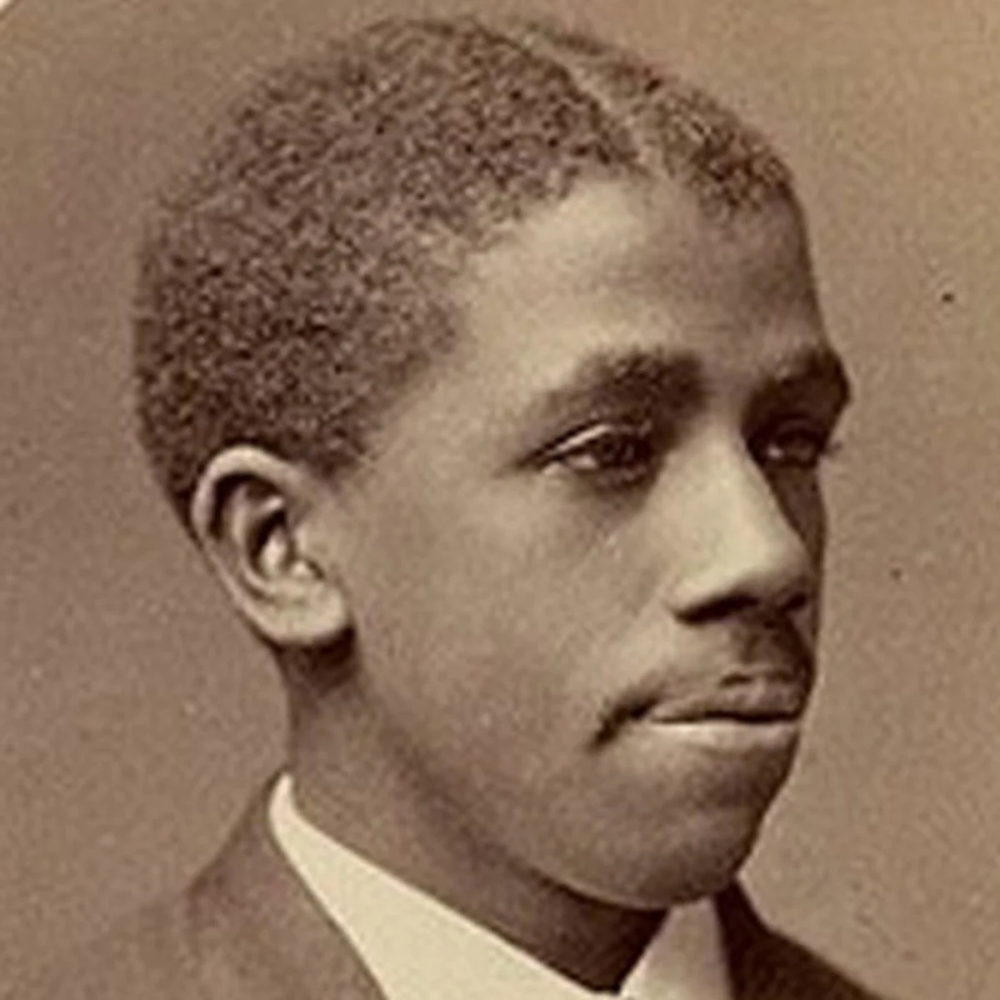

January is the Start of a New Year!
Spotlight Scientists
For this first month of 2025, we wanted to highlight our scientific “resolutions”. The scientists pictured are role models for various character traits vital to the success in the our field: perseverance, a passion for exploration, and curiosity. Over the next year, we will think of these scientists and use them as inspiration to embody these traits more in our own journeys to become the next generation of successful scientists.

Edward Alexander Bouchet (1852-1918) - perseverance
Edward Bouchet was the first African-American to earn a PhD from an American University. He earned his PhD from Yale in 1876 in just 2 years, which also made him one of the first 20 Americans to earn a PhD in Physics. Despite his impressive credentials, he was unable to obtain a position as a University Professor due to racial discrimination, and instead got a job teaching physics and chemistry at Philadelphia’s Institute for Colored Youth (ICY). After 26 years of teaching, he lost his job when ICY decided to shift focus to more vocational rather than academic teaching. For the next few years he moved around and had various different teaching jobs, while also being active in the NAACP and the Franklin Institute. The same year he died (1918), Elmer Imes became the second African American to earn a PhD in Physics.
Learn MoreMargaret Hamilton (1936-present) - exploration
Margaret Hamilton is one of the people credited with coining the term “software engineer”. After earning a BA in Mathematics from Earlham College, she began work at MIT in meteorology, building software to predict weather; this work directly influenced work on chaos theory. She later worked on the SAGE project to search for and track possibly unfriendly aircraft. Eventually, she moved to the Draper Laboratory at MIT which was directly involved in the Apollo Moon missions, for which she was put in charge of all the software for landing and guidance. Today, she has published over 130 papers, reports, and proceedings, and was awarded the Presidential Medal of Freedom by Barack Obama in 2016.
Learn MoreJuan Martín Maldacena (1968-present) - curiosity
Juan Martín Maldacena completed his PhD at Princeton University in 1996 after defending his thesis on black holes in string theory. Since then he has been a postdoctoral researcher at Rutgers University, an associate professor at Harvard, and now a Professor of Physics at Princeton. His research and ideas within string theory have been monumental—namely the AdS/CFT correspondence, which theorizes that certain quantum gravity theories are equivalent to other quantum mechanical theories with no gravitational force (in one fewer spacetime dimensions). Of the many awards he has received for his work, the Edward A. Bouchet award in 2004 celebrated his advancements in the linkage between string theory and quantum mechanics and for his scientific outreach to Spanish-speaking audiences.
Learn MoreThe men and women in our spotlight changed the course of science over and over. However, there are uncountable more that accelerated our progress further that we look to for inspiration as we take on our roles as mentors.
To learn more about our mentors, check out our Undergrad and Grad Mentors pages, or contact us!